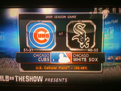
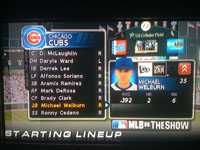
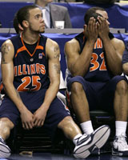

Much to your surprise, the counter at the bottom of the page magically has fallen from 499 to 125. I finally implemented a cookie to prevent people from being added to the counter every time they refresh, and they are only added if they visit again after an hour. While I do enjoy pretending that my website is really popular, I'm only fooling myself. However, 125 (relatively) unique hits that don't even include myself seems pretty impressive.
Counter Correction
Posted March 25 2008 5:37PM by Michael
Unfortunately, over Spring Break our internet at school decided to kind of stop working, which was the reason for the site being down from about Wednesday until Sunday night. I apologize that you are now 4 days behind in my life, but now that I am back at school there should be no more extended downtimes. A couple of quick updates on some of the previous blog entries: I'm hoping that in the near future I will finally get cookies up and running, unfortunately the downtime during my week off kind of derailed all of my progress. On an unrelated note, here is an interesting video of a dog playing fetch with himself my dad found:
Website Down
Posted March 24 2008 1:37AM by Michael
With the NCAA Tournament upon us, I have decided to record my picks for posterity on this site. Linked here is a pdf version of my yahoo bracket (which is the same as all of my brackets, it just is the only site that let me save to a pdf).I started writing out a complete reasoning for every game, but quickly got bored, so I'll just comment on some of the teams/matchups: My overall thoughts on these picks? I feel like I don't have enough upsets (outside of the Midwest Regional). I also don't have the special 5-12 upset this year, but none of the 12's seem to be very impressive, and I feel like the 5 seeds are better than the 4 seeds this year. I am very confident about Vanderbilt doing well, I just have a feeling about them. Similarly, I don't know why I feel that Purdue will do well, but I'm willing to take the risk on them continuing to play like veterans. I don't feel like I know very much about the field this year, it's harder to follow 300+ teams when your own team (Illinois) has the year it's been having. Based on all these great thoughts and criteria, I expect my mom or Joyce to beat me. Again.
NCAA Tournament Picks
Posted March 18 2008 9:57PM by Michael
EAST REGIONAL
MIDWEST REGIONAL
SOUTH REGIONAL
WEST REGIONAL
FINAL FOUR
I've been getting a lot of complaints about lack of updates, so I thought I'd throw an update out there for those longing to hear what I do all day. Today was spent mostly moving a 19 year old virtual version of myself into the MLB from AAA. After destroying the competition in AA I got the call last night up to AAA, which I proceeded to also obliterate. Tonight, however, I was called up to the Cubs (which may or may not have been influenced by Ryan Theriot breaking his hand), where I proceeded to enter "Beast Mode" to the tune of a .400 AVG over my first 7 games (including no hits my first 2 games, as well as the game I just played). Because I know everyone not only follows my life, but also my virtual life. I realize these pictures aren't top quality, but even an iPhone isn't going be able to capture a TV picture very well. Note: Yes, I realize the image on the left does not have the exact stats I just applauded myself for achieving. Unfortunately, I was playing another game before I took this picture, and evidently I lowered my AVG ever so slightly On another note, for some reason the game decides that when you choose your favorite number in the world for your jersey number, it will do its best to get you that number (or the closest number to it incrementing upwards until a number is available for that team). And when you get called up, they do it again. Unfortunately, the programmers seem to have based each subsequent jersey number reassigning based upon your previous jersey number, not your desired number. Hence the reason I'm wearing 35 instead of 26 (after dabbling with numbers such as 29 and 31 in the minors). Maybe I am the only person annoyed by this, but I don't see many second basemen wearing 35 (at least any good ones). In terms of the site, I see a large portion of my loyal followers have been using the comment feature to give me ideas to implement on the site, or what to fix. The couple hours I spent on it today was to fix a couple smaller bugs, though one larger problem remains. I would disclose what it is, but it would probably be exploited hundreds of times before I woke up in the morning. Later on this week I will divulge all of my NCAA bracket predictions (which are based on my not at all extensive knowledge of college basketball this year), and even later (think multiple weeks later) I will detail my fantasy baseball rosters (if only so I can reference them later in the year to see what kind of pitiful players I drafted). And so ends the longest blog post in the history of Welburn's...
Call up to 'The Show'
Posted March 18 2008 1:11AM by Michael
The last few hours have been quite promising. I now have implemented the blog using a database, as well as everybody's favorite feature: comments (so feel free to comment away, hopefully there are no bugs). Unfortunately, the database isn't quite as fast to update as I would like, so it might be 10-15 seconds before you comment is registered. I still need to enable sessions to fully take advantage of being an administrator on my own website, but all in due time. Perhaps in the near future I will implement things such as a database search. Too many ideas coming to me at once. On a sadder note, the Illini failed to win today, making the tournament a lot less interesting (even if they likely would have lost the first game). They did, however, likely save me from playing a ton of NCAA College Hoops 2k8 for the next 4 days. Instead, I will spend all of my waking hours working on this site as well as furthering my career in MLB 08: The Show where I languish in AA despite being a beast. For now, however, I must go shower.
The Good and the Bad
Posted March 16 2008 6:28PM by Michael